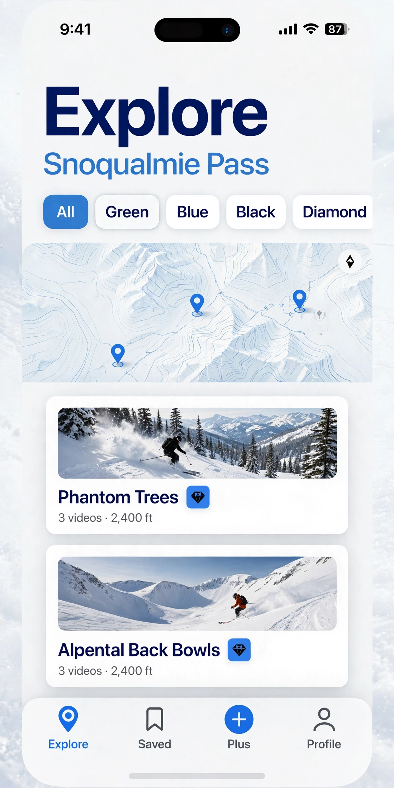

Explore
A map and a list for one zone. Filter by green, blue, black, or double-black.
A colony of trip reports
Tripolony is an iPhone app for ski routes. Each route leads with video from the people who have skied it, then the vertical, the aspect, and the latest snow note. It starts at Snoqualmie Pass.

Open the app, pick a route near the pass, and watch it being skied. You can browse without an account. Sign in when you want to save a route or add your own clip.
A map and a list for one zone. Filter by green, blue, black, or double-black.
The route page opens on the video. YouTube, TikTok, and Vimeo play in place. Tripolony does not host the file.
Bookmark a route, leave a condition note, or download the zone’s photos before you lose service at the trailhead.
Write to tripolony@googlegroups.com, or use the support page to start that email from your mail app.